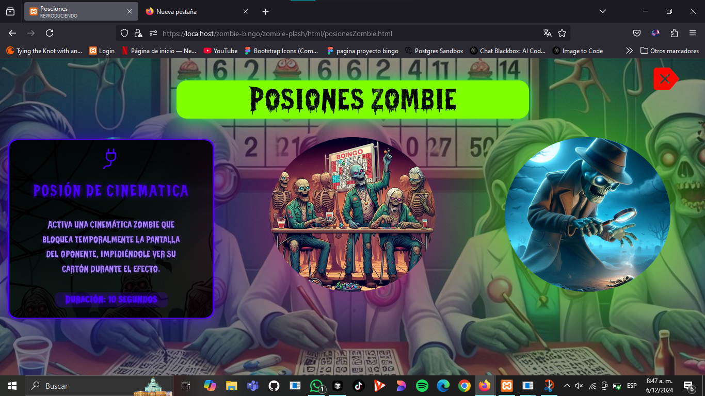

<!-- Agregar antes del contenedor del carrusel -->
<div class="back-button-container">
    <a href="login.php" class="back-button">Volver al Login</a>
</div>

<!-- Contenedor principal del carrusel -->
<div class="carousel-container">
    <div class="carousel-slide">
        
        
        
        
        
        
    </div>
    
    <!-- Botones de navegación -->
    <button class="carousel-button prev">&#10094;</button>
    <button class="carousel-button next">&#10095;</button>
</div>

<style>
    .carousel-container {
        position: relative;
        width: 100vw;
        height: 100vh;
        overflow: hidden;
    }

    .carousel-slide {
        display: flex;
        width: 100%;
        height: 100%;
    }

    .carousel-slide img {
        width: 100%;
        height: 100%;
        object-fit: cover;
        flex-shrink: 0;
    }

    .carousel-button {
        position: absolute;
        top: 50%;
        transform: translateY(-50%);
        background: rgba(0, 0, 0, 0.5);
        color: white;
        padding: 16px;
        border: none;
        cursor: pointer;
        font-size: 18px;
    }

    .prev {
        left: 10px;
    }

    .next {
        right: 10px;
    }

    .back-button-container {
        position: fixed;
        top: 20px;
        left: 20px;
        z-index: 1000;
    }

    .back-button {
        background-color: rgba(0, 0, 0, 0.7);
        color: white;
        padding: 10px 20px;
        border-radius: 5px;
        text-decoration: none;
        font-family: Arial, sans-serif;
        transition: background-color 0.3s;
    }

    .back-button:hover {
        background-color: rgba(0, 0, 0, 0.9);
    }
</style>

<script>
    const carouselSlide = document.querySelector('.carousel-slide');
    const images = document.querySelectorAll('.carousel-slide img');
    
    let counter = 0;
    const size = images[0].clientWidth;

    // Botones
    document.querySelector('.next').addEventListener('click', () => {
        if (counter >= images.length - 1) return;
        carouselSlide.style.transition = "transform 0.4s ease-in-out";
        counter++;
        carouselSlide.style.transform = 'translateX(' + (-size * counter) + 'px)';
    });

    document.querySelector('.prev').addEventListener('click', () => {
        if (counter <= 0) return;
        carouselSlide.style.transition = "transform 0.4s ease-in-out";
        counter--;
        carouselSlide.style.transform = 'translateX(' + (-size * counter) + 'px)';
    });
</script>
